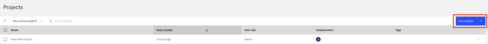
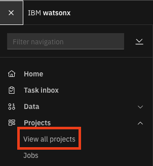
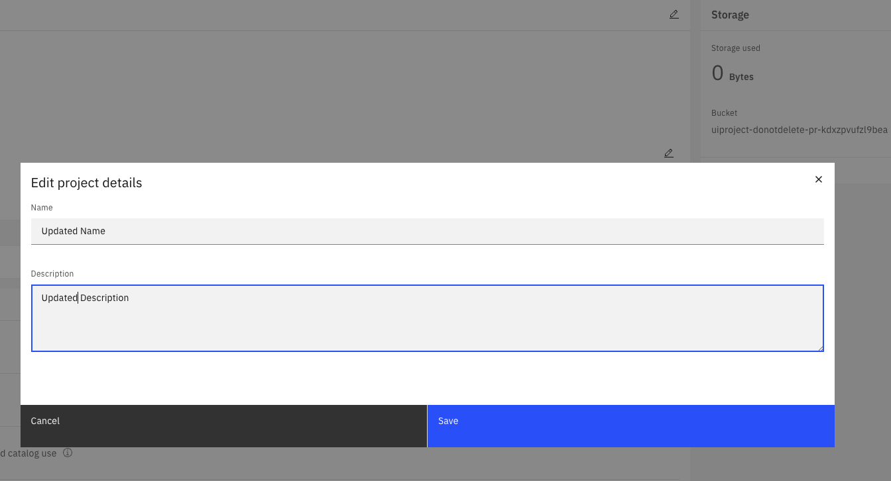
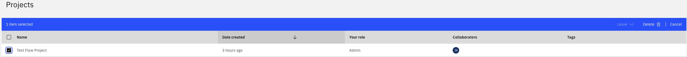

Projects#
A project is a collaborative workspace in the watsonx.data integration platform where users can organize assets such as jobs, flows, and environments.
Projects provide an isolated context for managing and grouping related assets, allowing for better organization, access control, and lifecycle management.
The SDK provides functionality to interact with projects on the watsonx.data integration platform.
- This includes operations such as:
Creating a project
Retrieving existing projects
Importing a project from a zip file
Updating a project
Deleting a project
Creating a Project#
In the UI, you can create a new project by clicking the New Project + button.


To create a new Project object using the SDK, use the Platform.create_project() method.
You must specify the name attribute.
Additionally, you can provide optional parameters such as description, tags, public, project_context and project_type.
The project_context parameter accepts either a ProjectContext enum member or a string literal.
By default, the project_context parameter points to DATA_FABRIC.
Projects created in the Data Fabric context are visible in Data Fabric and WatsonX contexts, this is not true the other way round.
The project_type parameter accepts either a ProjectType enum member or a string literal:
WATSONX_DATA_FABRIC(default) - Creates a WatsonX project, used in WatsonX context and Data Fabric context.CLOUD_PAK_FOR_DATA- Creates a classic Cloud Pak for Data project
If you do not pass in a project_type parameter, the SDK will default to ProjectType.WATSONX_DATA_FABRIC, effectively creating the project within the watsonx view.
This method returns a Project object.
>>> from ibm_watsonx_data_integration.cpd_models import ProjectType, ProjectContext
>>>
>>> my_project = platform.create_project(
... name='Test Project',
... description='Test Project Description',
... tags=['flow_test_project'],
... public=True,
... project_context=ProjectContext.DATA_FABRIC,
... project_type=ProjectType.WATSONX_DATA_FABRIC
... )
>>> my_project
Project(name='Test Project', ...)
Retrieving Existing Projects#
To list existing projects in the UI, navigate to View all projects.


Projects can be retrieved via the SDK by using the Platform.projects property.
This property returns a Projects object.
You can also filter the projects returned based on attributes including name and project_id.
>>> # Returns a list of all projects
>>> platform.projects
[...Project(name='Test Project', ...)...]
>>> # Returns the first project matching the given `name`
>>> test_project = platform.projects.get(name='Test Project')
>>> test_project
Project(name='Test Project', ...)
>>> # Returns the project with the matching project_id
>>> platform.projects.get(project_id=test_project.project_id)
Project(name='Test Project', ...)
>>> # Returns a list of all projects that match `name`
>>> platform.projects.get_all(name='Test Project')
[Project(name='Test Project', ...)]
Retrieving Project Assets#
Projects contain various types of assets such as data assets, connections, parameter sets, jobs, and flows.
You can retrieve and filter these assets using the Project.assets property.
This property returns an Assets collection that supports filtering by asset type.
Getting All Assets
>>> # Get all assets in the project
>>> project = platform.projects.get(name='Test Project')
>>> all_assets = project.assets.get_all()
>>> all_assets
[Asset(name='my_data_asset', asset_type='data_asset', ...), Asset(name='my_connection', asset_type='connection', ...)]
Filtering by Asset Type
You can filter assets by type using either the AssetType enum or a string value:
>>> from ibm_watsonx_data_integration.cpd_models.asset_model import AssetType
>>>
>>> # Get only data assets using enum
>>> data_assets = project.assets.get_all(asset_type=AssetType.DATA_ASSET)
>>> data_assets
[Asset(name='my_data_asset', asset_type='data_asset', ...)]
>>>
>>> # Get only parameter sets using string
>>> param_sets = project.assets.get_all(asset_type='parameter_set')
>>> param_sets
[Asset(name='my_param_set', asset_type='parameter_set', ...)]
>>>
>>> # Get only connections
>>> connections = project.assets.get_all(asset_type=AssetType.CONNECTION)
>>> connections
[Asset(name='my_connection', asset_type='connection', ...)]
Getting a Specific Asset by ID
>>> # Get a specific asset by its ID
>>> asset = project.assets.get(asset_id='asset-123-456')
>>> asset
Asset(name='my_asset', asset_id='asset-123-456', ...)
Iterating Over Assets
The Assets collection supports iteration:
>>> # Iterate over all assets
>>> for asset in project.assets:
... print(f"{asset.name}: {asset.asset_type}")
my_data_asset: data_asset
my_connection: connection
my_param_set: parameter_set
Advanced Filtering with Lucene Queries
For more complex filtering, you can use Lucene query syntax:
>>> # Find assets with names starting with 'test_'
>>> test_assets = project.assets.get_all(query='asset.name:test_*')
>>>
>>> # Combine asset_type filter with custom query
>>> filtered_assets = project.assets.get_all(
... asset_type=AssetType.DATA_ASSET,
... query='asset.name:prod_*',
... limit=50
... )
Available Asset Types
The AssetType enum includes over 200 asset types, including:
Core types:
DATA_ASSET,CONNECTION,PARAMETER_SET,JOB,JOB_RUNData integration:
DATA_INTG_FLOW,DATA_INTG_SUBFLOW,DATA_INTEGRATION_JOBMachine learning:
WML_MODEL,WML_DEPLOYMENT,AI_EXPERIMENTNotebooks:
NOTEBOOK,SCRIPTAnd many more…
See the AssetType enum documentation for the complete list.
Importing a Project#
You can import assets from a zip file into a project using the
Platform.import_project() method.
If a project with the given name already exists it is reused; otherwise a new one is created automatically.
This method returns the Project with assets imported.
You can also control the polling behaviour using the optional interval and timeout parameters:
>>> from pathlib import Path
>>> platform.import_project(
... name='My Project',
... zip_path=Path('tests/resources/cpd_models/data/project_import.zip'),
... )
Project(name='My Project', ...)
If you already have a Project instance and want to
import assets into it directly, use Project.import_assets() instead:
>>> import_project = platform.projects.get(name='My Project')
>>> import_project.import_assets(zip_path=Path('tests/resources/cpd_models/data/project_import.zip'))
Updating a Project#
In the UI, you can update a project by clicking on the pencil icon under the Manage tab of the project. Once you have made the necessary changes, click Save to update the project.


To update a project via the SDK, first make the necessary in-memory changes to your Project object.
Next, pass this object to the Platform.update_project() method.
This method returns an HTTP response indicating the status of the update operation.
>>> my_project = platform.projects.get(name='Test Project')
>>> my_project.name = 'New name'
>>> my_project.description = 'New description.'
>>> platform.update_project(my_project)
<Response [200]>
Deleting a Project#
In the UI, you can delete a project by selecting its title from the projects list. To delete a project, click the Delete button in the top bar.


To delete a project via the SDK, you can pass the project instance to the Platform.delete_project() method.
This method returns an HTTP response indicating the status of the delete operation.
>>> platform.delete_project(my_project)
<Response [204]>
Associating a Service with a Project#
In the UI, you can associate a service with a project by navigating to you project -> Manage -> Services & integrations -> Associate service.
To associate a service with a project via the SDK, use the Project.associate_service() method.
This method accepts a Service instance and an optional compute_type parameter.
If compute_type is not provided, the SDK infers it automatically from the service CRN.
For unknown service types, the SDK defaults to WATSON.
This method returns an HTTP response, or None if the service is already associated with the project.
>>> service = platform.service_instances.get(name='watsonx.ai Runtime-hv')
>>> my_project.associate_service(service)
<Response [200]>
>>> # Or pass compute_type explicitly
>>> from ibm_watsonx_data_integration.cpd_models.service_model import ComputeType
>>> my_project.associate_service(service, compute_type=ComputeType.MACHINE_LEARNING)
Viewing Services Associated with a Project#
Services already associated with a project are available via the
associated_services property.
It returns an AssociatedServices collection
of Compute instances, supporting .get() and .get_all().
Each Compute instance has attributes
name, guid, type, crn, and credentials, and exposes a
get_service() method to retrieve
the full Service object.
>>> # Iterate over all associated services
>>> for service in my_project.associated_services:
... print(service.name, service.type)
watsonx.ai Runtime-hv machine_learning
>>> # Get a specific service resource by name
>>> service = my_project.associated_services.get(name='watsonx.ai Runtime-hv')
>>> service.type
'machine_learning'
>>> # Retrieve the full Service object
>>> service = service.get_service()
>>> service
Service(service_instance_id='...', name='watsonx.ai Runtime-hv')
Dissociating a Service from a Project#
To remove a service from a project, use the Project.dissociate_service() method.
It accepts either a Service or a
Compute instance.
>>> # Dissociate directly from associated_services
>>> compute = my_project.associated_services.get(name='watsonx.ai Runtime-hv')
>>> my_project.dissociate_service(compute)
<Response [200]>
>>> # Or dissociate by Service object
>>> service = platform.service_instances.get(name='watsonx.ai Runtime-hv')
>>> my_project.dissociate_service(service)
<Response [200]>